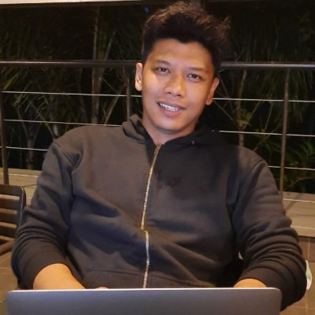

Struktur tim & pengembangan
- Membangun jenjang karier yang sebelumnya tidak ada: Junior, Mid, dan Senior Developer; Junior dan Senior QA.
- Menyertakan sistem mentoring di setiap jenjang agar engineer tahu cara berkembang.
- Ikut merekrut 5 anggota tim.

Team Lead & Senior Software Engineer
Memimpin tim engineering yang mengirim sistem enterprise dengan cepat — .NET (C#), microservices, OutSystems, integrasi sistem, dan AI-driven development dengan guardrail.
Team Lead & Senior Software Engineer dengan 15+ tahun pengalaman merancang arsitektur sistem enterprise dan memimpin tim delivery. Keahlian mendalam pada .NET (C#), microservices, integrasi sistem end-to-end, dan platform low-code OutSystems.
Di PT Satu Kode Solusi, saya memimpin tim 20+ orang — 10 engineer plus QA dan BA — untuk klien enterprise Pertamina, Falcker, dan Philip Morris Indonesia. Pada semester kedua 2025, tim berhasil membawa 20+ proyek Pertamina go-live, dengan 5–7 proyek berjalan paralel di 3 squad.
Saya menerapkan AI-driven development dengan guardrail: Claude, file panduan bersama, self-review developer, dan code review senior. Hasilnya, waktu dari kickoff hingga full QA turun dari 3–4 bulan menjadi 1–1,5 bulan per proyek.
Senior Software Engineer · 2012 – 2015
Software Engineer · 2009 – 2011
Peran saya: Technical Lead — menentukan pendekatan teknis dan membangun core engine yang dipakai developer lain.
Peran saya: Technical Lead — menentukan pendekatan teknis dan membangun core engine yang dipakai developer lain.
Peran saya: Solution Architect — merancang alur end-to-end dan membangun layanan pemrosesan 3D.